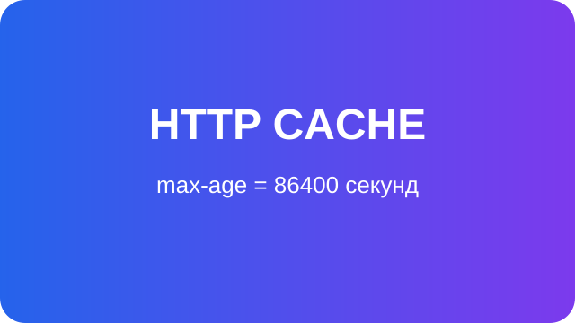

Файловий кеш
Перший запит триває приблизно 3 секунди. Повторний запит отримує дані з файлового кешу.
Клієнтське та серверне кешування

Файли CSS, JavaScript і SVG кешуються браузером.
Перший запит триває приблизно 3 секунди. Повторний запит отримує дані з файлового кешу.
Перший запит триває приблизно 2 секунди. Повторний запит отримує дані із сесії.